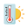

오늘, 어떤 하루를 계획하고 계신가요?
당신의 소중한 하루가 날씨 때문에 망설여지지 않도록,
가장 필요한 정보를 미리 챙겨드릴게요.
---
최종 업데이트
--°
날씨 정보를 불러오는 중...
체감온도
--°
풍속
-- m/s
습도
--%
강수량
-- mm
미세먼지
---
대기 질 정보를 불러오는 중...
--:--
일출
--:--
일몰
🤔 시간대별 날씨
📆 주간 날씨
오늘의 생활 지수
자외선 지수
--
정보를 불러오는 중...

체감 온도
--°
실제 느껴지는 온도입니다.
풍속
-- m/s
풍력 계급
--
(보퍼트 풍력 계급 기준)습도
--%
공기의 건조/습한 정도입니다.